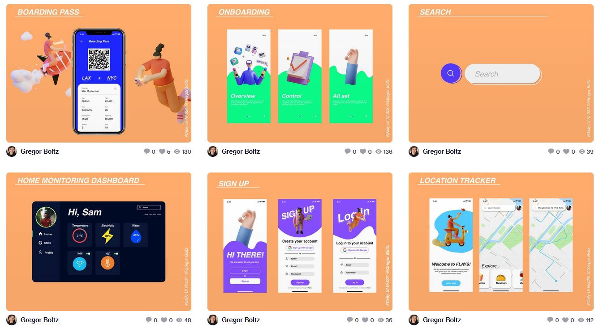
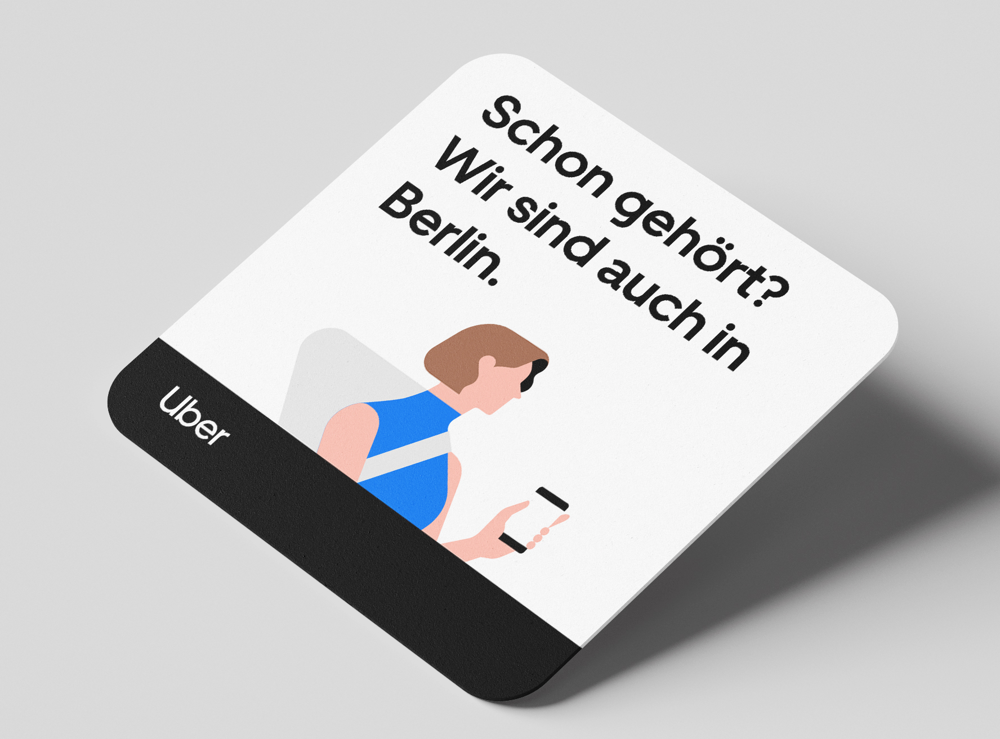

Daily UI
During my summer break I did the Daily UI challenge. Each day I got sent a topic for which I need to design something. I used this challenge to practice my design skills and constanly create new screens. In this picture you can see some examples of the screens I created. The challenge was a lot of fun and enabled me to add a lot of work to my portfolio. Creating this many screens/designs was a real challenge. It started of with easier topics and got harder and harder each day. My favourite thing about this challenge was, that it forced me to create something in one day. It is very rare for me to finish a design in only one day. It offten takes more time, because of clients or other factors. Thats why it was such a nice change to create something fast and post it the same day.
Beer Coaster
While I was working as a Graphic Desinger at Uber, I was part of a lot of different marketing campaigns. One of these was creating this beer coaster, which would be distrubuted to bars and restaurants all over Germany. The project was a promotion for Uber and involved a promotion code that prevents people from driving under the influence. I came up with the idea of using beer coasters, because I know from experience that most people inspect them while beeing in a bar or restaurant. I created an eye-catching illustration to trigger the intrest of the viewer and added the promotion on the back of the coaster.
Ping

Ping was my first University project. Together with a group of 5 other students we created the app called Ping. It is a local socializing app that allows people to find new friends. For example I want to play basketball, but don't have anyone to play with. I could use Ping to create a "ping" inside the app, with all the details of the event, in this case playing basketball. Other users of the app would the see the ping on the map and would be able to joing and socialize. For this project I was in charge of creating the UI design for the app and Webiste. Together with my design partner we created several iterations and one final prototype.